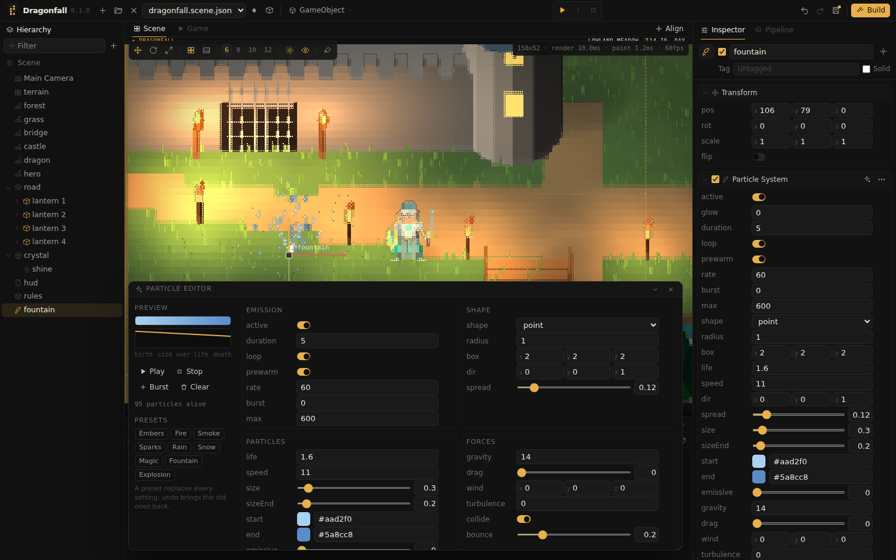

Guides
Particles
The Particle System component emits particles that move, fall, change color and size, and bounce off the ground, for effects such as fire, smoke, sparks, rain and snow. The Particle Editor provides presets and shows every change while the effect runs.

Creating an effect
- Choose GameObject, Effects, Particle System, or add the component to an existing object with Add Component.
- Press the sparkle button on its Inspector card. The Particle Editor opens and enables Live preview, so the effect runs while it is edited.
- Select a preset: embers, fire, smoke, sparks, rain, snow, magic, fountain or explosion. A preset replaces every setting; undo restores the previous ones.
- Adjust the settings on the right. The color bar and the line on the left show the color and the size over a particle's life; the counter shows the number of live particles.
Play restarts the system, Stop ends emission and lets live particles finish, Burst emits the burst count at once, and Clear removes every particle.
Settings
| Group | Settings |
|---|---|
| Emission | active switches births on and off. duration is one cycle in seconds; with loop off the system stops after it. prewarm starts as if it had run for a while, for flames and smoke that should not grow in. rate per second, burst at the start of each cycle, max alive at once. |
| Shape | Where particles are born: a point, inside a sphere of radius, inside a box, or on a flat ring. dir is the main direction; spread widens it from a beam (0) to every direction (1). |
| Particles | life in seconds (each varies by 30%), speed, size at birth and sizeEnd at death, start and end color, emissive so they glow in the dark, and glow, a light that follows the effect. |
| Forces | gravity pulls down (negative rises), drag slows, wind pushes along a vec3, turbulence makes them swirl. With collide they stop at the ground and bounce back; a bounce of 0 removes them there, for rain. |
| Render | space: in world space particles stay where they were born when the object moves, which suits trails and smoke; in local space they move with it. render draws a dot or a streak along the motion, for rain and sparks. seed varies the pattern. |
From scripts
local fx = self:component("emitter")
fx:play() -- restart the cycle
fx:emit(40) -- 40 particles now, playing or not
fx:stop() -- no new particles; live ones finish
fx:clear()
log(fx:count())
fx.rate = 80 -- every setting is a field
fx.start = "#ff4020"A one shot effect, such as an explosion when something is destroyed: give a prefab a particle system with loop off and a burst, then spawn it where it should happen.
Particle countEach particle is drawn as dots, and a terminal frame has a limited number of them. A few hundred particles are sufficient for most effects;
max limits the count.